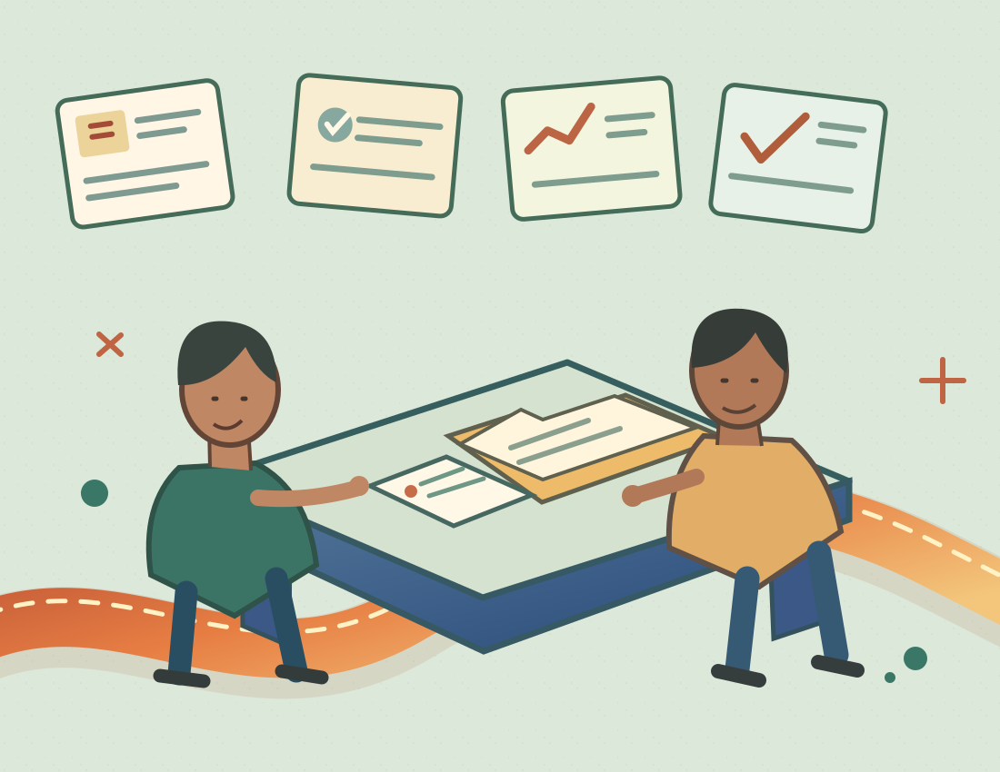

The same update,
again and again.
Routine requests and repeat explanations take time away from work that needs judgment.
YOUR BUSINESS NEED / 04
When a simple task needs five messages and three follow-ups, work gets harder than it has to be. Make responsibilities, handovers and next steps easier to see—without adding complexity for its own sake.
CLEAR OWNERS VISIBLE HANDOVERS STEADY PROGRESS

01 / THE CHALLENGE
Most teams do not need more dashboards by default. They need to know what matters, who owns it and how the next step is agreed.
Routine requests and repeat explanations take time away from work that needs judgment.
When responsibilities aren't visible, tasks can be delayed or duplicated.
Different versions of work, status or requirements make coordination harder to trust.
02 / INTERACTIVE OPERATING FLOW
Explore an illustrative internal workflow—from request to review. It is an example of how responsibilities can be organized, not an active project manager or operational system.
01 / UNDERSTAND THE REQUEST
Agree what is needed, why it matters, what information is missing and where the request should go. Keep the intake method as simple as the work allows.
02 / KNOW WHO OWNS IT
Assign responsibility, confirm priorities and agree any dependencies. Accountability does not require an expensive platform to start.
03 / MAKE PROGRESS VISIBLE
Share relevant progress, blockers and changes with the right people, using approved channels. Do not assume all work should be automated.
04 / LEARN FROM THE WORK
Confirm acceptance, document open issues and look for repetitive bottlenecks. Make improvements based on evidence and appropriate team feedback.
Concept demonstration only · No tasks, employee information, files or workflow events are saved, assigned or transmitted
03 / PRACTICAL CHANGE
Technology is an option after the process is understood. The approach begins with people, manual practices that already work, and realistic responsibilities.
Find repeated steps, unclear ownership and the points where important information gets lost.
PROCESS DISCOVERYAgree what should remain manual, what needs clearer guidance and what might benefit from tooling.
PRACTICAL PRIORITIESCheck that responsibilities and permissions are clear, then improve based on documented feedback.
OWNERSHIP & REVIEW04 / START WITH THE REAL NEED
Business Efficiency is the natural starting discussion for clearer internal processes and more consistent handovers. Connected Growth may suit a broader problem crossing sales, customer experience and delivery.
Specific deliverables, software access, integrations, automation, timelines and prices require written scope and approval. No operational system is activated by this page.
Compare all four packagesExplore process mapping, clear task ownership, manageable handovers and practical coordination.
Request a proposalExplore joined-up improvements where everyday operations affect customers, sales and delivery.
Request a proposal05 / VERIFIED EVIDENCE
Customer stories, time savings, cost reductions or productivity numbers will be published only when supported by approved records and client permission. The workflow explorer above is fictional.
Pending: client consent, initial workflow, agreed scope, actual implementation details and independently verifiable outcomes.
NOT A CLAIM ABOUT AN EXISTING CLIENT OR COMPLETED PROJECT06 / THE NEXT STEP
Tell us which tasks, handovers or approvals create friction. We can discuss an appropriate scope without claiming guaranteed savings or offering unapproved integrations.
Opens the existing external proposal destination. Actual enquiry submission and receipt have not been independently verified. No details are submitted by this page.